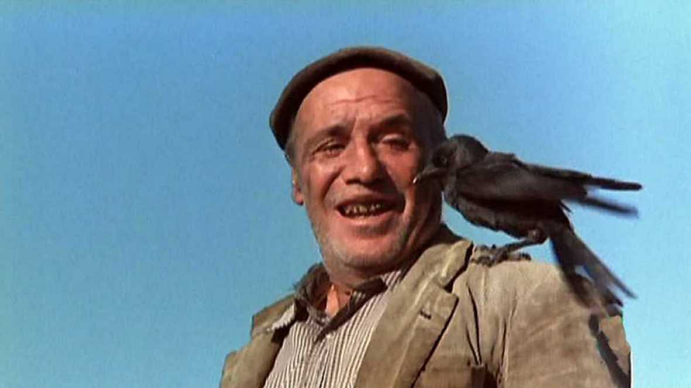

LOS SANTOS INOCENTES

FICHA TÉCNICA
Dirección:
Mario Camus
Duración:108 min.
Género:Drama, cine histórico.
Interpretación:Paco Rabal (Azarías), Alfredo Landa.
SIPNOPSIS
España en la postguerra.
PORTADA